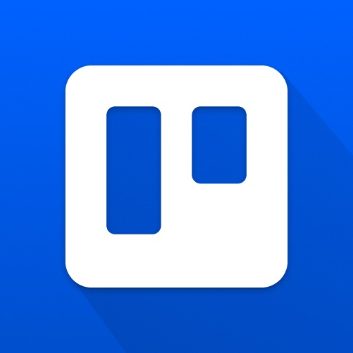
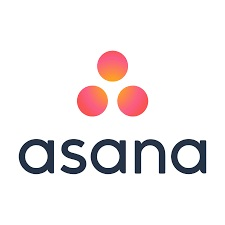
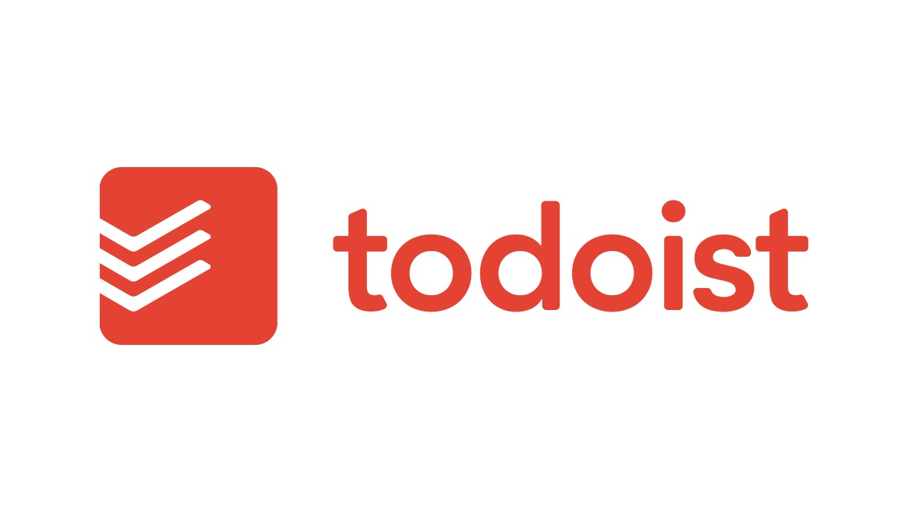
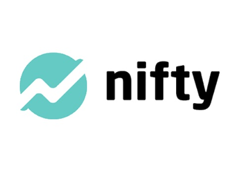

Sobre el Blog
Bienvenido a nuestro espacio dedicado a explorar el fascinante mundo de la tecnología y las herramientas digitales. Este blog nace con el propósito de ofrecerte contenido útil y relevante para que puedas mantenerte actualizado sobre las últimas tendencias y novedades en el ámbito digital. En un mundo que evoluciona rápidamente, sabemos que mantenerse al día con las herramientas digitales adecuadas puede marcar la diferencia en tu productividad, creatividad y eficiencia. Es por eso que nos enfocamos en brindar reseñas detalladas, análisis de herramientas innovadoras y recomendaciones para facilitar tu experiencia tecnológica.
Aquí, encontrarás artículos sobre herramientas que van desde aplicaciones de productividad hasta programas especializados para diseñadores, programadores, creadores de contenido y profesionales de diversas áreas. Nuestro objetivo es ayudarte a descubrir las mejores opciones para mejorar tu flujo de trabajo, optimizar tus proyectos personales o profesionales, y explorar nuevas formas de potenciar tu desarrollo personal y académico a través de la tecnología.
Además de hablar sobre herramientas digitales, también abordamos temas relacionados con el futuro de la tecnología, la inteligencia artificial, la evolución de los sistemas operativos y mucho más. Este espacio está pensado para ser un recurso accesible para todos, desde aquellos que se inician en el mundo digital hasta expertos que buscan mejorar sus habilidades con las mejores herramientas disponibles.
Nos apasiona compartir con nuestra audiencia los descubrimientos y conocimientos adquiridos, así como fomentar una comunidad de aprendizaje en la que cada lector pueda aportar sus opiniones, sugerencias y experiencias. Estamos comprometidos en ofrecerte contenido que sea no solo educativo, sino también inspirador y motivador, para que puedas seguir explorando las infinitas posibilidades que el mundo digital tiene para ofrecer.
Últimos Artículos
Trello

Trello es una herramienta de gestión de proyectos basada en tableros, tarjetas y listas. Es ideal para organizar tareas de manera visual y colaborativa, permitiendo a los equipos gestionar proyectos y flujos de trabajo de manera eficiente.
Asana

Asana es una plataforma de gestión de proyectos que permite a los equipos planificar, organizar y realizar un seguimiento de su trabajo de manera sencilla. Ofrece herramientas para la creación de tareas, asignación de responsabilidades y seguimiento de progresos.
Monday.com
Monday.com es una herramienta de colaboración y gestión de trabajo visual que ayuda a los equipos a planificar y rastrear tareas. Su interfaz intuitiva permite gestionar proyectos de manera flexible y escalable.
Todoist

Todoist es una aplicación de gestión de tareas y productividad que permite organizar proyectos personales y laborales. Ofrece funcionalidades como recordatorios, etiquetas y prioridades, para una gestión eficiente del tiempo.
Nifty

Nifty puede ser una herramienta de gestión de proyectos todo en uno que ofrece funcionalidades para la planificación de proyectos, la comunicación en equipo y el seguimiento del progreso. Permite a los equipos colaborar y mantenerse organizados en un solo lugar.